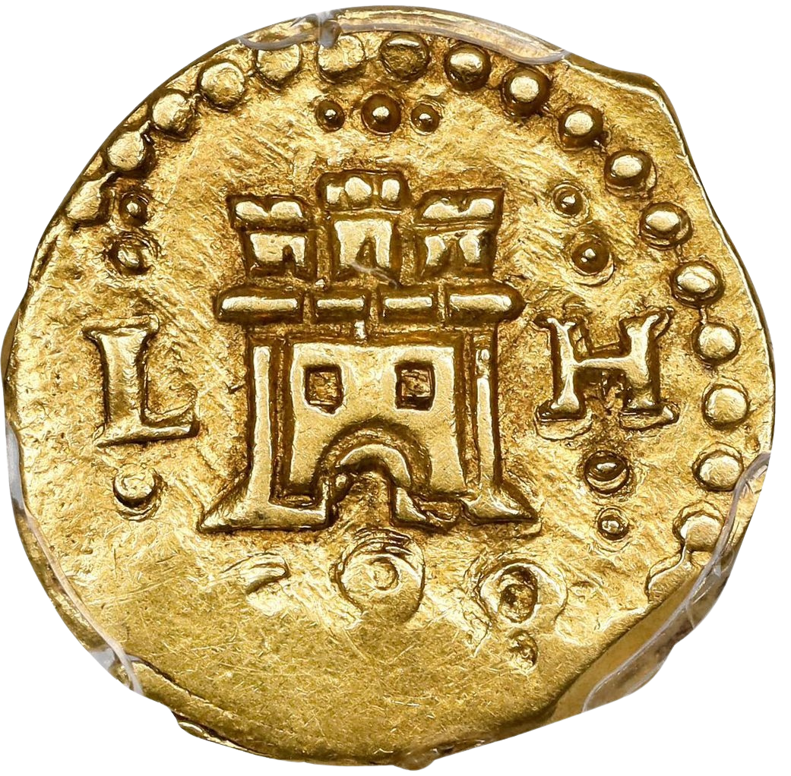

<!-- SECCIÓN 5: CONVERSOR DE BARRAS A MONEDAS (BARRAS EN SU PROPIA SECCIÓN) -->
<h4 class="subtitulo-menu-barra">Conversor de Lingotes a Monedas</h4>
<div class="macuquina-floating-bar barras-medina-floating-bar">
  <!-- Botón 1: Pragmática Medina del Campo -->
  <button
    type="button"
    class="macuquina-icon-btn"
    title="Conversión Pragmática Medina del Campo"
    onclick="
      cargarModalExterno(
        'conversor3.html',
        'pre',
        'Pragmática de Medina del Campo',
      )
    "
  >
    
  </button>

  <!-- Botón 2: Legislación Monetaria Borbónica -->
  <button
    type="button"
    class="macuquina-icon-btn"
    title="Conversión Legislación Borbónica"
    onclick="
      cargarModalExterno(
        'conversor3.html',
        'post',
        'Legislación Monetaria Borbónica',
      )
    "
  >
    
  </button>
</div>
